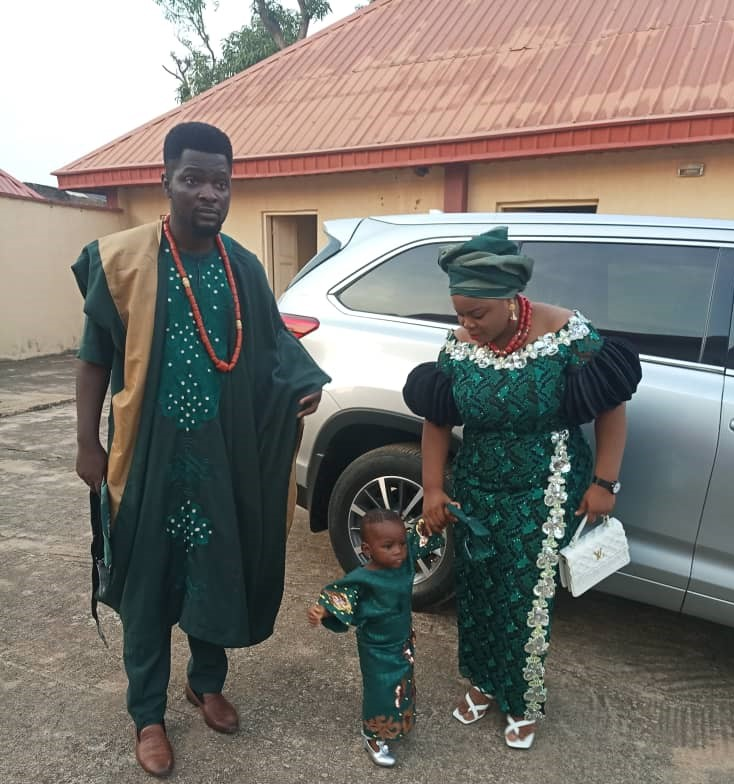

LORD BE MERCIFUL UNTO ME SOMOYE OPEYEMI ADEKUNLE PAUL
Unto you o lord who is able to do exceedingly and abundantly above all i could evenr think of or even ask of,i come to you and i ask that you bless the works of my hands ,that this year make the end of financial stagnation in all faceth of life just so you know who am praying to his name GOD yeshua

Then i have also come to say thank you LORD GOD for keeping my family
and all my well wishers in good health lord your faithfulness remains
even when we step out of your will ,so have come to say thank you lord
Words can not just say it all ,but i just want to say thanks for all you ave done and what you are doing with what you would still do continue with your great plans even betr in the new year lord so as to be a light and a testimony to you name GOD